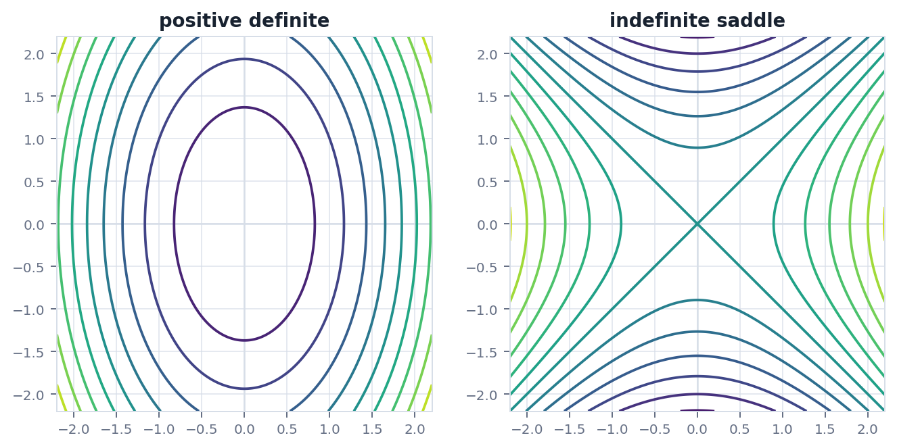
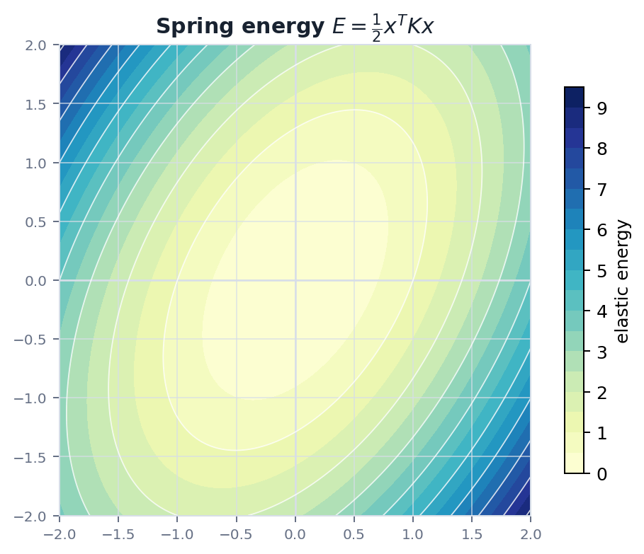

Route
0. 全章主线
二次型把二阶信息压缩进矩阵, 对称矩阵让这种信息有清晰几何意义.
二次型$x^TAx$ 表示二阶量.
对称化只保留真正影响二次型的部分.
正定性判断能量是否总为正.
谱定理正交特征基给出主轴.
优化Hessian 描述局部曲率.
Definition
1. 二次型是什么
二次型是所有二次项的统一矩阵表达.
$$
q(x)=x^TAx
$$
若 $A$ 不是对称矩阵, 二次型只依赖它的对称部分:
$$
x^TAx=x^T\left(\frac{A+A^T}{2}\right)x
$$
因此研究实二次型时, 可以把焦点放在实对称矩阵上.
Definiteness
2. 正定, 负定和不定
正定性判断一个二次型在所有非零方向上的符号.
| 类型 | 条件 | 几何图像 |
|---|---|---|
| 正定 | $x^TAx>0,\ x\ne0$ | 能量碗, 原点是严格极小 |
| 负定 | $x^TAx<0,\ x\ne0$ | 倒扣能量碗 |
| 不定 | 有正方向也有负方向 | 鞍面 |
| 半正定 | $x^TAx\ge0$ | 某些方向平坦 |
常用判据包括特征值符号, 顺序主子式和 Cholesky 分解是否存在.
Spectral
3. 谱定理和主轴
实对称矩阵有一组标准正交特征向量, 这让二次型可以被旋转到主轴方向.
$$
A=Q\Lambda Q^T,\quad Q^TQ=I
$$
令 $y=Q^Tx$, 则
$$
x^TAx=y^T\Lambda y=\lambda_1y_1^2+\cdots+\lambda_ny_n^2
$$
这说明特征向量给出二次型的主轴, 特征值给出各主轴方向上的曲率或能量刚度.
Geometry
4. 几何图像: 曲率, 主轴和能量
等高线能直接显示正定和不定二次型的差别.


Physics
5. 物理问题: 势能, 刚度和稳定性
小位移系统的稳定性通常由二次能量决定.
问题弹簧结构在平衡点附近的势能可近似为 $E(x)=\frac12x^TKx$. 若 $K$ 正定, 任意非零小位移都会增加能量, 平衡点稳定.
$$
K\succ0\Rightarrow E(x)>0\quad (x\ne0)
$$
优化中的 Hessian 也扮演类似角色. 对函数 $f$ 在临界点附近做二阶展开, Hessian 的正定性决定局部极小, 负定性决定局部极大, 不定则常对应鞍点.
Checklist
6. 实战清单与易错点
二次型题要区分相似, 合同和正交对角化.
实战清单
- 矩阵是否对称?
- 研究的是二次型 $x^TAx$ 还是线性变换 $Ax$?
- 需要判断正定性还是求标准形?
- 特征值符号是否解释了几何图像?
高频错误
- 把合同变换和相似变换混淆.
- 只看对角元就判断正定.
- 忘记半正定有平坦方向.
- 把 Hessian 和梯度混为一谈.
记住二次型是能量和曲率的矩阵语言. 实对称矩阵的特征值告诉每个主方向上的弯曲程度.